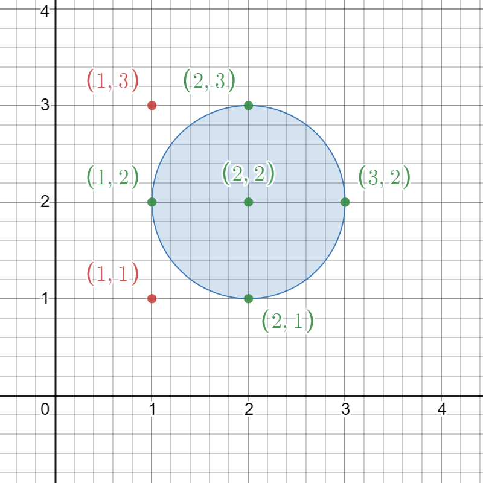
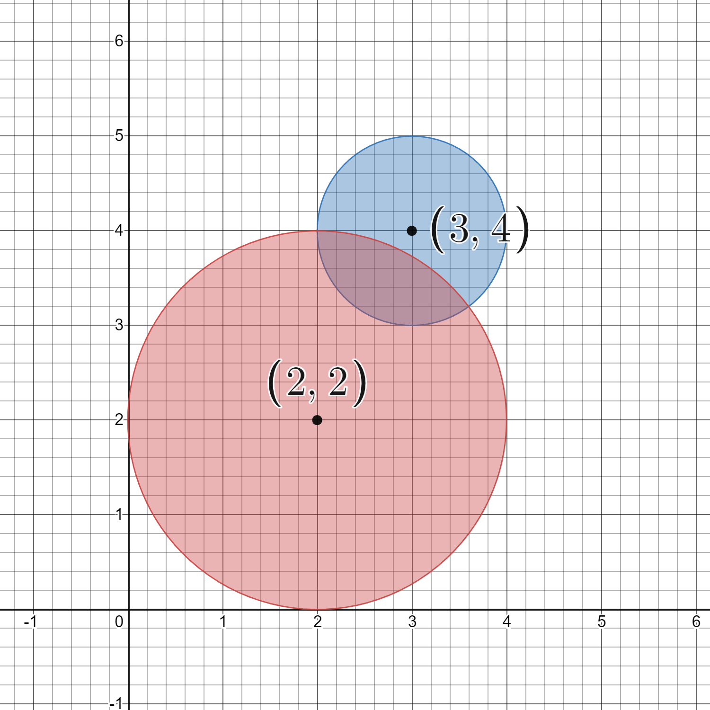

| Category | Difficulty | Likes | Dislikes |
|---|---|---|---|
| Algorithms | Medium | 251 | 223 |
array | hash-table | math | geometry | enumeration
rubrik
Given a 2D integer array circles where circles[i] = [xi, yi, ri] represents the center (xi, yi) and radius ri of the ith circle drawn on a grid, return the number of lattice points that are present inside at least one circle.
Note:
Example 1:

Input: circles = [[2,2,1]]
Output: 5
Explanation:
The figure above shows the given circle.
The lattice points present inside the circle are (1, 2), (2, 1), (2, 2), (2, 3), and (3, 2) and are shown in green.
Other points such as (1, 1) and (1, 3), which are shown in red, are not considered inside the circle.
Hence, the number of lattice points present inside at least one circle is 5.Example 2:

Input: circles = [[2,2,2],[3,4,1]]
Output: 16
Explanation:
The figure above shows the given circles.
There are exactly 16 lattice points which are present inside at least one circle.
Some of them are (0, 2), (2, 0), (2, 4), (3, 2), and (4, 4).
Constraints:
1 <= circles.length <= 200circles[i].length == 31 <= xi, yi <= 1001 <= ri <= min(xi, yi)